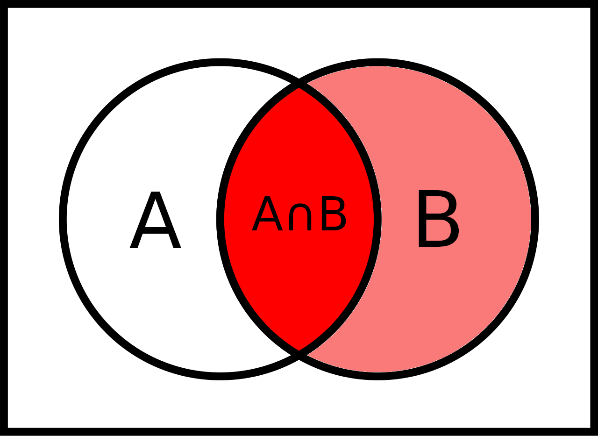
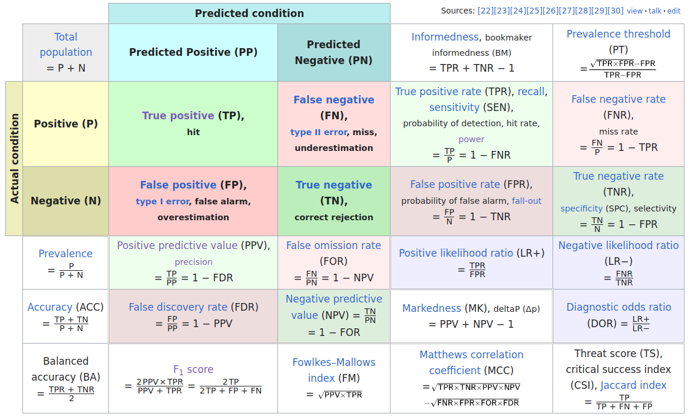
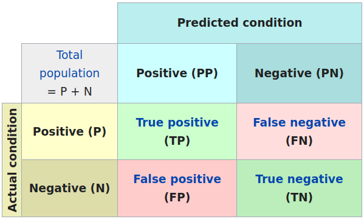

W#12: Collaborative Git, Data Science Projects, Probability
Matrices
What is a matrix?
- A matrix is a 2-dimensional array of numbers with rows and columns.
- The numbers in it are called its elements.
Isn’t that a data frame?
- No, a dataframe is more general. In a matrix, every element has the same basic data type!
- In R, a matrix is a vector plus some specification of the dimensions.
- (A matrix can also be of characters or logicals, it can also have row- and column-names)
Matrices in Mathematics
- Addition and subtraction of matrices is done element-wise.
- Multiplication of a matrix with a scalar is done element-wise.
- Multiplication of two matrices is done row times column.
- Transposition of a matrix is done by flipping the matrix over its diagonal.
Probability for Data Science
Probability Topics for Data Science
- The concept of probability and the relation to statistics and data
- Probability: Given a probabilistic model, what data will we see?
What footprints does the animal leave?
- Statistics: Given data, what probabilistic model could produce it?
What animal could have left these footprints?
- Probability: Given a probabilistic model, what data will we see?
- Probabilistic simulations
- Resampling: Bootstrapping (p-values, confidence intervals), cross-validation
- The confusion matrix: Conditional probabilities and Bayes’ theorem
- Sensitivity, specificity, positive and negative predictive value
- Random variables: A probabilistic view on variables in a data frame
- Modeling distributions of variables: The concepts of discrete and continuous probability distributions.
- The central limit theorem or why the normal distribution is so important.
What is probability
- One of the most successful mathematical models used in many domains.
- We have a certain intuition of probability visible in sentences like: “That’s not very probable.” or “That is likely.”
- A simplified but formalized way to think about uncertain events.
- Two flavors: Objective (Frequentist) or Subjective (Bayesian) probability.
- Objective interpretation: Probability is relative frequency in the limit of indefinite sampling. Long run behavior of non-deterministic outcomes.
- Subjective interpretation: Probability is a belief about the likelihood of an event.
- Related to data:
- Frequentist philosophy: The parameters of the population we sample from are fixed and the data is a random selection.
- Bayesian philosophy: The data we know is fixed but the parameters of the population are random and associated with probabilities.
Events as subsets of a sample space
Sample space, atomic events, events
In the following, we say \(S\) is the sample space which is a set of atomic events.
Example for sample spaces:
- Coin toss: Atomic events \(H\) (HEADS) and \(T\) (TAILS), sample space \(S = \{H,T\}\).
- Selection person from a group of \(N\) individuals labeled \(1,\dots,N\), sample space \(S = \{1,\dots,N\}\).
- Two successive coin tosses: Atomic events \(HH\), \(HT\), \(TH\), \(TT\); sample space \(S = \{HH,HT, TH, TT\}\). Important: Atomic events are not just \(H\) and \(T\).
- COVID-19 Rapid Test + PCR Test for confirmation: Atomic events true positive \(TP\) (positive test confirmed), false positive \(FP\) (positive test not confirmed), false negative \(FN\) (negative test not confirmed), true negative \(TN\) (negative test confirmed), sample space \(S = \{TP, FP, FN, TN\}\).
An event \(A\) is a subset of the sample space \(A \subset S\).
Important: Atomic events are events but not all events are atomic.
Example events for one coin toss
- The set with one atomic event is a subset \(\{H\} \subset \{H,T\}\).
- Also the sample space \(S = \{H,T\} \subset \{H,T\}\) is an event. It is called the sure event.
- Also the empty set \(\{\} = \emptyset \subset \{H,T\}\) is an event. It is called the impossible event.
- Interpretation:
- Event \(\{H,T\}\) = “The coin comes up HEAD or TAIL.”
- Event \(\{\}\) = “The coin comes up neither HEADS nor TAILS.”
Two coin tosses:
- Event \(\{HH, TH\}\) = “The first toss comes up HEAD or TAIL and the second is HEADS.”
- Event \(\{HT, TH, HH\}\) = “We have HEAD once or twice and it does not matter what coins.”
- The event \(\{TT, HH\}\) = “Both coins show the same side.”
Questions for three coin tosses
- “The coins show one HEAD” = \(\{HTT, THT, TTH\}\)
- “The first and the third coin are not HEAD?” = \(\{THT, TTT\}\)
- How many atomic events exist for three coin tosses? \(2^3=8\)
For selecting one random person:
Event \(\{2,5,6\}\) = The selected person is either 2, 5, or 6.
(Not all three people which is a different random variable!)
For COVID-19 testing:
- Event \(\{TP, FP\}\) = The test is positive.
- Event \(\{TN, FP\}\) = The person does not have COVID-19.
- Event \(\{TP, TN\}\) = The rapid test delivers the correct result.
The set of all events and the probability function
The set of all events
- The set of all events is the set of all subsets of a sample space \(S\).
- When the sample space has \(n\) atomic events, the set of all events has \(2^n\) elements.
- The set of all events is very large also for fairly simple examples!
Examples
- For 3 coin tosses: How many events exist? \(2^3=8\) atomic events \(\to\) \(2^8=256\) event
- How is it for four coin tosses? \(2^{(2^4)} = 65536\)
- Select two out of five people (without replacement)1?
Ten atomic events: 12, 13, 14, 15, 23, 24, 25, 34, 35, 45. Events: \(2^{10} = 1024\)
Probability function
Definition: A set of all events a function \(\text{Pr}: \text{Set of all subsets of $S$} \to \mathbb{R}\) is a probability function when
- The probability of any event is between 0 and 1: \(0\leq \text{Pr}(A) \leq 1\). (So, actually a probability function is a function into the interval \([0,1]\).)
- The probability of the event coinciding with the whole sample space (the sure event) is 1: \(\text{Pr}(S) = 1\).
- For events \(A_1, A_2, \dots, A_n\) which are pairwise disjoint we can sum up their probabilities:
\[\text{Pr}(A_1 \cup A_2\cup\dots\cup A_n) = \text{Pr}(A_1) + \text{Pr}(A_2) + \dots + \text{Pr}(A_n) \]
This captures the essence of how we think about probabilities mathematically. Most important: We can only easily add probabilities when they do not share atomic events.
Example Probability Function
Example coin tosses: We can define a probability function \(\text{Pr}\) by assigning the same probability to each atomic event.
- \(\text{Pr}(\{H\}) = \text{Pr}(\{T\}) = 1/2\)
- \(\text{Pr}(\{HH\}) = \text{Pr}(\{HT\}) = \text{Pr}(\{TH\}) = \text{Pr}(\{TT\}) = 1/4\)
So, the probability one or zero HEADs is \(\text{Pr}(\{HT, TH, TT\}) = \text{Pr}(\{HT\}) + \text{Pr}(\{TH\}) + \text{Pr}(\{TT\}) = \frac{3}{4}\).
Example selection of two out of five people: We can define a probability function \(\text{Pr}\) by assigning the same probability to each atomic event.
- \(\text{Pr}(\{12\}) = \text{Pr}(\{13\}) = \dots = \text{Pr}(\{45\}) = 1/10\).
So, the probability that 1 is among the selected \(\text{Pr}(\{12, 13, 14, 15\}) = \frac{4}{10}\).
Some basic probability rules
We can compute the probabilities of all events by summing the probabilities of the atomic events in it. So, the probabilities of the atomic events are building blocks for the whole probability function.
\(\text{Pr}(\emptyset) = 0\)
For any events \(A,B \subset S\) it holds
- \(\text{Pr}(A \cup B) = \text{Pr}(A) + \text{Pr}(B) - \text{Pr}(A \cap B)\)
- \(\text{Pr}(A \cap B) = \text{Pr}(A) + \text{Pr}(B) - \text{Pr}(A \cup B)\)
- \(\text{Pr}(A^c) = 1 - \text{Pr}(A)\)


Recap from the motivation of logistic regression: When the probability of an event is \(A\) is \(\text{Pr}(A)=p\), then its odds (in favor of the event) are \(\frac{p}{1-p}\). The logistic regression model “raw” predictions are log-odds \(\log\frac{p}{1-p}\).
Conditional probability
Definition: The conditional probability of an event \(A\) given an event \(B\) (write “\(A | B\)”) is defined as
\[\text{Pr}(A|B) = \frac{\text{Pr}(A \cap B)}{\text{Pr}(B)}\]

We want to know the probability of \(A\) given that we know that \(B\) has happened (or is happening for sure).
Two coin flips: \(A\) = “first coin is HEAD”, \(B\) = “one or zero HEADS in total”. What is \(\text{Pr}(A|B)\)? \(A\) = {HH, HT}, \(B\) = {TT, HT, TH} \(\to\) \(A \cap B = \{HT\}\)
\(\to\) \(\text{Pr}(A\cap B) = \frac{3}{4}\), \(\text{Pr}(A\cap B) = \frac{1}{4}\)
\(\to\) \(\text{Pr}(A|B) = \frac{1/4}{3/4} = \frac{1}{3}\)
More examples of conditional probability
COVID-19 Example: What is the probability that a random person in the tested sample has COVID-19 (event \(P\) “positive”) given that she has a positive test result (event \(PP\) “predicted positive”)?
\[\text{Pr}(P|PP) = \frac{\text{Pr}(P \cap PP)}{\text{Pr}(PP)}\]
Definition p-value: Probability of observed or more extreme outcome given that the null hypothesis (\(H_0\)) is true.
\[\text{p-value} = \text{Pr}(\text{observed or more extreme outcome for test-statistic} | H_0)\]
Probability in the Confusion Matrix
Confusion Matrix
Confusion matrix of statistical classification, large version:
4 probabilities in confusion matrix

Sensitivity and Specificity
\(\to \atop \ \) Sensitivity is the true positive rate: TP / (TP + FN)
\(\ \atop \to\) Specificity is the true negative rate: TN / (TN + FP)
Positive/negative predictive value
\(\scriptsize\downarrow \ \) Positive predictive value: TP / (TP + FP)
\(\scriptsize\ \downarrow\) Negative predictive value: TN / (TN + FN)
Here TP, TN, FP, FN are the numbers of true positives, true negatives, false positives, and false negatives.
As the set of atomic events \(\{TP\}, \{FP\}, \{FN\}, \{TN\}\) we can define the probabilities of the events like \(\text{Pr}(\{TP\}) = \frac{TP}{N}\) with \(N = TP + FP + FN + TN\).
… as conditional probabilities
Sensitivity and specificity are conditional probabilities:
Sensitivity is the probability of a positive test result given that the person has the condition: \(\text{Pr}(PP|P) = \frac{TP}{TP + FN}\)
Specificity is the probability of a negative test result given that the person does not have the condition: \(\text{Pr}(PN|N) = \frac{TN}{TN + FP}\)
Positive predictive value is the probability of the condition given that the test result is positive: \(\text{Pr}(P|PP) = \frac{TP}{TP + FP}\)
Negative predictive value is the probability of the condition given that the test result is negative: \(\text{Pr}(N|PN) = \frac{TN}{TN + FN}\)
Note: The positive predictive value \(\text{Pr}(P|PP)\) is sensitivity \(\text{Pr}(PP|P)\) with “flipped” conditionality.
Bayes’ Theorem
Bayes’ Theorem is a fundamental theorem in probability theory that relates the conditional probabilities \(\text{Pr}(A|B)\) and \(\text{Pr}(B|A)\) to the marginal probabilities \(\text{Pr}(A)\) and \(\text{Pr}(B)\):
\[\text{Pr}(A|B) = \frac{\text{Pr}(B|A) \cdot \text{Pr}(A)}{\text{Pr}(B)}\]
Example: What is the probability that a random person in the tested sample has COVID-19 (\(P\) = positive) given that she has a positive test result (\(PP\) = predicted positive)?
\[\text{Pr}(P|PP) = \frac{\text{Pr}(PP|P) \cdot \text{Pr}(P)}{\text{Pr}(PP)}\] So, we can compute the positive predictive value \(\text{Pr}(P|PP)\) from the sensitivity \(\text{Pr}(PP|P)\) and the rate (or probability) of positive conditions \(\text{Pr}(P)\) and the rate (or probability) of positive tests.
Prevalence
- The rate (or probability) of the positive conditions in the population is also called Prevalence:
\[\text{Pr}(P) = \frac{P}{N} = \frac{TP + FN}{N}\]
Sensitivity and Specificity are properties of the test (or classifier) and are independent of the prevalence of the condition in the population of interest.
The Positive/Negative Predictive Values are not!
How the positive predictive value (PPV) depends on prevalence
We assume a test with sensitivity 0.9 and specificity 0.99. \(N = 1000\) people were tested.
| PP | PN | |
|---|---|---|
| P | TP | FN |
| N | FP | TN |
Sensitivity = TP / P
Specificity = TN / N
PPV = TP / PP
Prevalence = P / N
Prevalence = 0.1
\(P\) = 100 \(N\) = 900
| PP | PN | |
|---|---|---|
| P | 90 | 10 |
| N | 9 | 891 |
PPV = 90 / (90 + 9) = 0.909
From the positive tests 90.9% have COVID-19.
Prevalence = 0.01
\(P\) = 10 \(N\) = 990
| PP | PN | |
|---|---|---|
| P | 9 | 1 |
| N | 9.9 | 980.1 |
PPV = 9 / (9 + 9.9) = 0.476
From the positive tests only 47.6% have COVID-19!

MDSSB-DSCO-02: Data Science Concepts